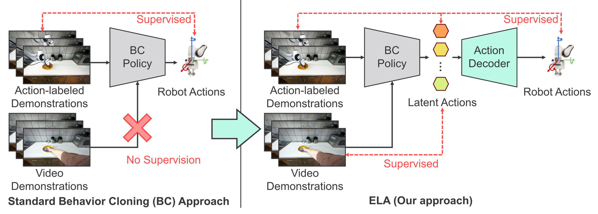
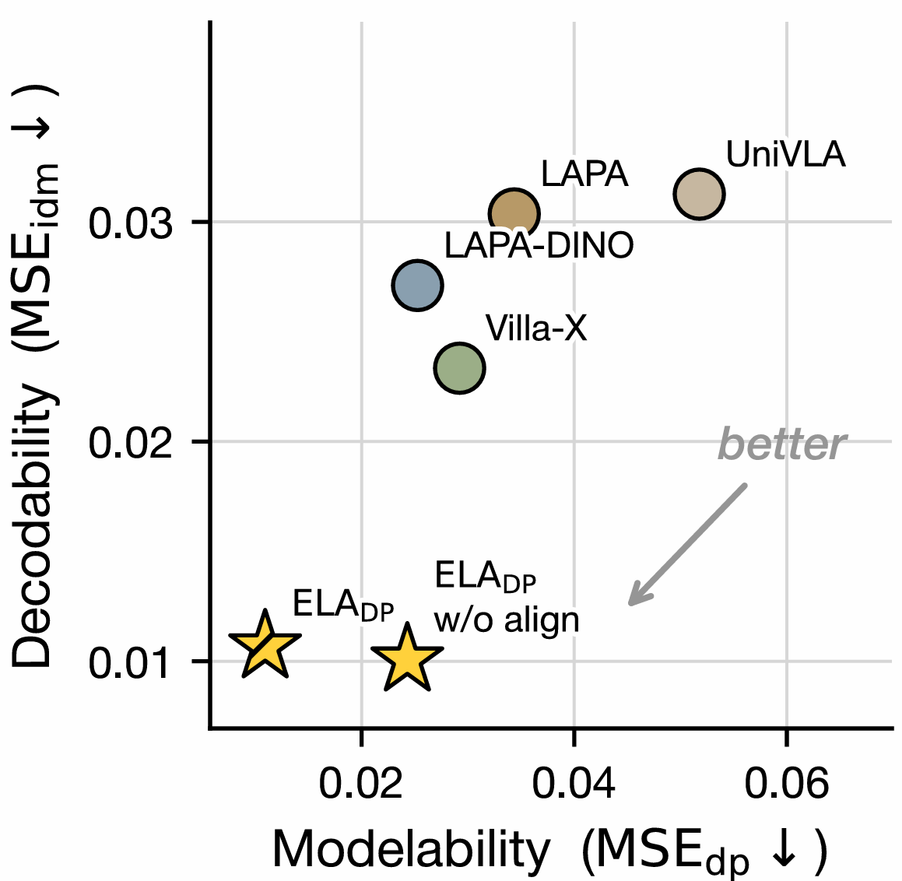
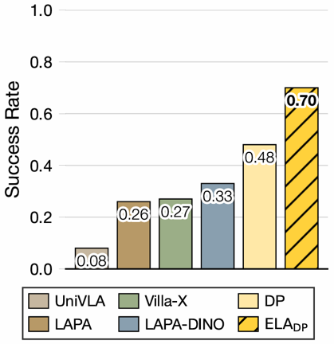
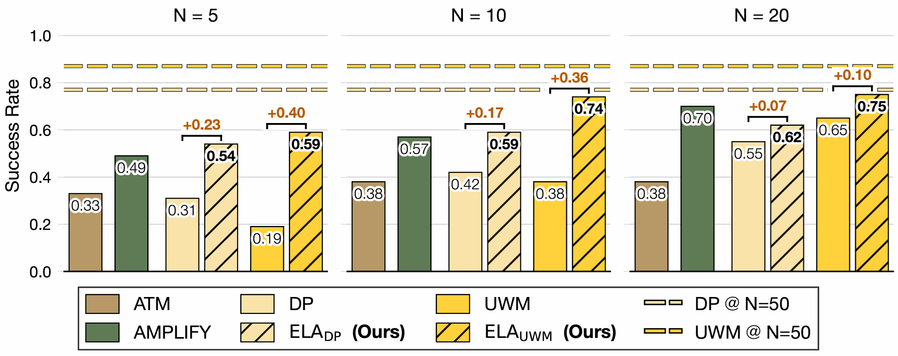

ELA: End-to-End Latent Action Policy Learning from Video Demonstrations
University of Texas at Austin
CoRL 2026
TL;DR ELA learns robot policies from abundant action-free video plus only a handful of action-labeled demonstrations. It trains latent actions end-to-end so they are both modelable (easy for a policy to predict) and decodable (easy to map back to robot actions).

Why latent actions fall short today
Robot action labels are expensive to collect, while video demonstrations, including human videos and unlabeled robot trajectories, are far easier to obtain at scale. Latent action modeling turns video into policy supervision: an inverse dynamics model (IDM) infers a latent action from a pair of frames, and a policy learns to predict it.
Existing methods, however, follow a two-stage pipeline. Latent actions are learned first, then frozen as targets for a downstream policy. Nothing shapes the latent space for control, so the latents can end up hard to predict, hard to decode, or both.
We identify two properties a latent action space needs for effective policy learning:
- Modelability
- latent actions can be reliably inferred from observations by a policy.
- Decodability
- latent actions can be faithfully mapped into executable continuous robot actions.

Method
Policy learning through latent actions
ELA splits a behavior cloning policy into two parts: a Latent Action Policy π that predicts a latent action z from the current observation, and an Action Decoder ψ that maps z to a k-step chunk of robot actions.
The latent actions come from a Latent Action Model (LAM), made of an inverse dynamics model (IDM) that infers zt from an observation pair (ot, ot+k) and a forward dynamics model (FDM) that reconstructs ot+k from ot and zt.
Because the IDM can label any video, the policy trains on both action-free and action-labeled data. Only the Action Decoder needs action labels.
End-to-end joint training
Training the LAM, policy, and Action Decoder in a single combined objective causes latent action collapse: policy gradients push the latent space toward whatever is easiest to predict, even when that hurts decoding. ELA avoids this with two ideas.
- Representation alignment. Instead of sending policy gradients into the LAM, ELA aligns both the LAM and the policy to a shared reference representation from a frozen perceptual encoder (DINOv3).
- Two alternating passes that improve modelability from complementary directions.
Real-world results: learning from human video
For each task, ELA uses 10 action-labeled robot demonstrations and 40 human video demonstrations. Tasks range from pick-and-place to articulated-object manipulation, and each is evaluated over 20 trials with randomized object positions.
Comparison with latent action baselines
We compare against latent action models pre-trained on large-scale cross-embodiment data (LAPA, Villa-X, UniVLA), an in-domain variant (LAPA-DINO), and plain Diffusion Policy (DP).
| Method | IDM params | Training trajectories |
|---|---|---|
| LAPA | 206M | 1M+ |
| Villa-X | 124M | 1M+ |
| UniVLA | 34M† | 1M+ |
| LAPA-DINO | 102M† | 250 |
| ELADP (ours) | 6M | 250 |
† DINO encoder parameters excluded. The IDM is used only during training. At test time, ELA adds just the 4M-parameter Action Decoder.

ELADP reaches 0.70 success, against 0.48 for plain DP, the strongest baseline. The large pre-trained models do not turn their capacity into better downstream control, and LAPA-DINO trails both ELADP and DP despite in-domain training. In the few-shot setting, the bottleneck is not data scale or diversity but how the latent action space is learned. Figure 2 shows why: the baselines' latents are hard to decode and hard to predict.
Simulation: few-shot learning on LIBERO-10
LIBERO-10 is the most challenging subset of LIBERO: 10 long-horizon tabletop manipulation tasks. Each task has 50 robot demonstrations, of which only N ∈ {5, 10, 20} are action-labeled and the rest are action-free. Results are averaged over 3 seeds. We apply ELA to two representative backbones, Diffusion Policy (DP) and Unified World Model (UWM), giving ELADP and ELAUWM. We compare them with the video-based methods ATM and AMPLIFY, which require external point-tracking models. ELA needs no external models or preprocessing.

ELA consistently improves both backbones by supervising them with latent actions inferred from all demonstrations. With only 5 labeled demonstrations, ELA raises UWM from 19% to 59% and DP from 31% to 54%. In the low-data regime (N = 5, 10), both ELA variants outperform ATM and AMPLIFY. UWM beats DP only when all 50 demonstrations are labeled. With scarce labels it falls behind, and ELA recovers its performance.
Limitations
- Scale. ELA has not yet been validated at large scale. Scaling to cross-embodiment datasets and more diverse scenarios is future work.
- RGB-only input. ELA operates on raw RGB pixels and does not use depth or 3D priors. Monocular depth models or 3D supervision could help.
- Task scope. Our evaluation excludes highly dexterous and precision-intensive manipulation.
Citation
@inproceedings{ela2026,
title = {ELA: End-to-End Latent Action Policy Learning from Video Demonstrations},
author = {TODO},
booktitle = {Conference on Robot Learning (CoRL)},
year = {2026}
}